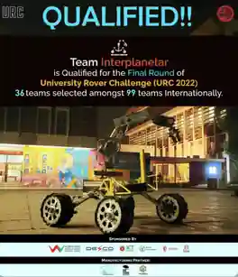

S. M. Sakeef Sani
click anywhere to enter with sound
S. M. Sakeef Sani
click anywhere to enter with sound
Biomedical Engineer · AI Researcher · Founder · Creative
Blending engineering precision with human impact — from pioneering AI-driven healthcare diagnostics in underserved South Asian communities, to founding ventures that reshape how technology meets real-world needs.
// 01 — About
A Biomedical Engineer from Bangladesh University of Engineering and Technology who blends engineering precision with a passion for solving real-world problems. My journey spans AI research, serial entrepreneurship, and creative visual storytelling — fusing expertise and artistic flair for global good.
Pioneering ML for medical diagnostics in low-resource settings. Bias-aware, efficient models for tropical diseases and skin lesions.
Founded ventures from agro-drones to health apps. UIHP winner, IPAS innovator, now co-founding Hinton Bit Corp for enterprise solutions.
3D animation, VFX, and award-winning short films through Enigmatter Studio — where science meets art and imagination finds form.
Honda Y-E-S Award 2023, 2× Johns Hopkins 2nd Place, IPAS Innovation Award — recognized across four continents.
// 02 — Research
Leveraging machine learning to democratize medical diagnostics in underserved regions. Building scalable, bias-aware tools from limited data to empower clinicians worldwide.
Led development of mLabLLM — a fine-tuned LLaMA 3.2 model achieving 82.8% Top-3 accuracy for Dengue, Malaria, and Chikungunya diagnosis. Integrates Bayesian reasoning with LoRA and pruning for real-time, low-cost clinical support in resource-scarce settings.
Read on OpenReview →Created MSLD v2.0 with diverse skin tones to combat racial bias. Benchmarked ResNet50 via transfer learning from HAM10000. Prototype web app for inclusive, rapid mpox screening during the global outbreak.
Read on ScienceDirect →Curated the initial MSLD dataset and evaluated pre-trained models reaching ~82.96% accuracy in distinguishing mpox from similar diseases. Foundational work enabling AI-assisted surveillance when PCR testing is unavailable.
arXiv: 2207.03342 →Co-developed BMD-HS with 864 multi-label heart sound recordings for complex valvular diseases. Bridges traditional auscultation with AI diagnostics to enhance accuracy and reduce clinician subjectivity.
arXiv: 2409.00724 →// 03 — Awards & Achievements
Honors earned through collaborative excellence and disruptive thinking — from planetary engineering to healthcare innovation, on stages across four continents.
2024
2nd Place · Team FetoSynth, BUET
Co-designed a real-time acoustic system for fetal heart sound localization and monitoring, improving prenatal care in low-resource settings.
View CBID Page →2024
2nd Place · Team DengueDrops, BUET
Led Team DengueDrops with a smart IV fluid calculator for dengue patients to optimize fluid therapy and hospital management in endemic regions.
View CBID Page →2023
Honda Foundation · Bangladesh
Recognized for excellence in biomedical engineering and commitment to sustainable innovation. Flexible research grant supporting international exchange and ongoing research.
2021
Mars Society South Asia · 1st Bangladesh · 8th Globally
Team Interplanetar (BUET) devised an innovative gas compression system for Mars aerial exploration — 1st in Bangladesh, 8th globally.
2023
BHTPA · PakhiDrone BD
Agro-drone project under PakhiDrone BD received UIHP funding and incubation support for precision farming technology in rural Bangladesh.
// 04 — Professional Experience
From driving multimillion-BDT distribution strategy to lab-bench innovations and founding startups — translating research into deployable systems with measurable real-world impact.
2026 — PRESENT
Hinton Bit Corp
Building custom and tailored solutions for government and private entities alongside some renowned global giants. Leading operations strategy and delivery at the cutting edge of enterprise technology.
hbitcorp.com →2025 — 2026
British American Tobacco
Managed a 420mn BDT annual distribution network. Developed an innovative model for rural 'Char' areas using satellite imagery, geographical data, and ROI analytics. Built an automated shipment app enhancing real-time route-to-market efficiency.
2021 — 2025
mHealth Lab, BUET
Developed a real-time data collector using Raspberry Pi attachments. Contributed to a medical LLM for differential diagnosis. Created 3D anatomical landmarks from sparse 2D video data, boosting imaging accuracy in low-compute settings.
mHealth Lab →2023 — 2024
PakhiDrone BD
Led the creation of an agro-drone for precision farming and pesticide spraying, specifically adapted for Bangladesh's rural terrain and smallholder farming landscape. UIHP-funded and incubated into an early-stage startup.
// 05 — Animation & Filmmaking
Blending technical precision with artistic expression through 3D animation, VFX, game development, and visual storytelling.
My studio for 3D animation, NFTs, and VFX — where award-winning short films merge engineering precision with artistic expression. Founded to explore digital storytelling through immersive visual experiences.
Unreal Engine · iOS & Android
Creative fiction & world-building
Advanced Blender rigging
Complex environment creation
// 06 — Gallery
From planetary engineering to global stages — a visual tapestry of research, recognition, collaboration, and creativity.



_low.webp)